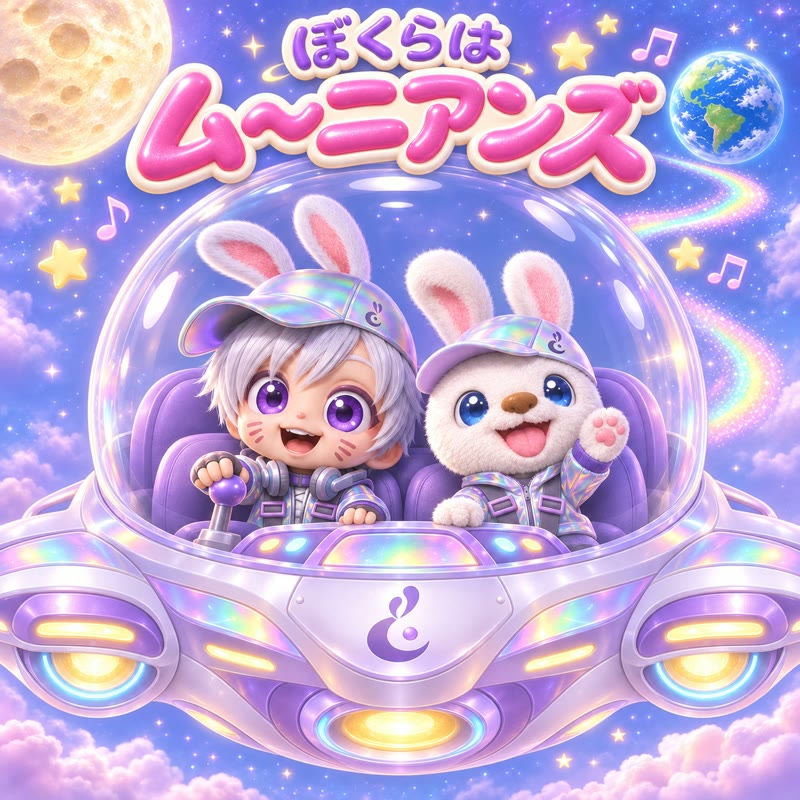
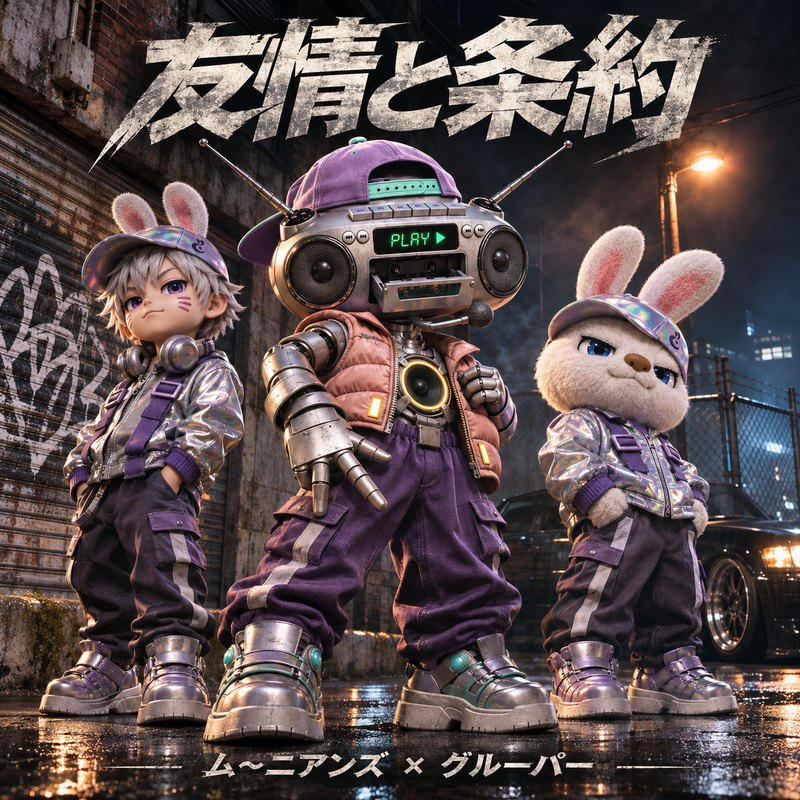

0:003:06
LYRICS
歌っているところが光ります。行を押すと、そこから再生します。
MOONIANS MUSIC / SOUNDS FROM THE MOON
月でつくった曲を、地球へ。
聴くのも、ダウンロードするのも自由です。
TRACK 01 / THEME SONG
ムーニアンズのテーマソング。
月から来たふたりの、自己紹介です。

0:003:06
LYRICS
歌っているところが光ります。行を押すと、そこから再生します。
TRACK 04 / GROUPER
ネタ動画「I'm Grouper」で流した曲。
ムーニアンズ × グルーパー。ぶつかったあとは、笑い合おう。

0:001:21
LYRICS
「I'm Grouper」より。
Yeah 上手に踏めてるじゃん そのライム
見せてやろうぜ あすのサンライズ
ここで諦めてんじゃねーよ！
ぶつかっていこーよ！
ピンチの時こそ 一層燃える
二兎追うものは一兎も得ず
BRIDGEAh ah ah ありがとな グルーパー
見えた 輝くフューチャー
VERSE 2 / RAPバイブスはずっと（燃えさかる！）
脅威もふたりなら（超えられる！）
CHORUS誇り高きあるココロザシ
TOGETHERていうかなろうよお友達
叩き合うよりも笑い合おう
OUTRO / RAPただ威張るよりも サバイバル
肩を組んで 笑うライバル
「次会う時は させてよね歓迎！」
「次会う時は させてよね！」
「歓迎！」
BGM / NO VOCALS
歌のない曲は、ここにまとめています。
どれも自由にダウンロードできます。